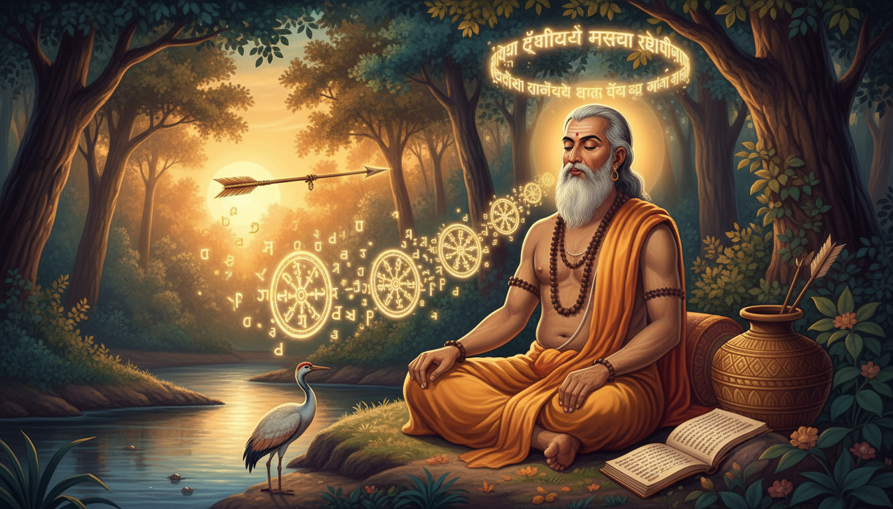

आज बाज़ार में बिकने वाला हर शाप-मोचन उपाय एक ही मान्यता पर टिका है — शाप आपके साथ हुआ है, और उपाय उसके ऊपर किया जाएगा। कोई पुजारी उसे काटता है, कोई ग्रह शांत किया जाता है, कोई नदी उसे बहा ले जाती है।

वाल्मीकि एकमात्र ऐसा प्रसंग हैं जहाँ शाप कभी रद्द नहीं हुआ। उसे उलट दिया गया — इतना उलट दिया गया कि वह पीछे की ओर चलने लगा। संस्कृत के पहले कवि वह इसलिए बने कि उन्होंने मृत्यु का शब्द तब तक दोहराया जब तक वह भगवान का नाम नहीं बन गया। शब्द हटाया नहीं गया — उन्हें उसी शब्द के भीतर इतनी देर रखा गया कि वह पलट गया।
यही पूरी विधि है, और यही कारण है कि उनकी सामग्री आज भी उस व्यक्ति के काम की है जिसकी समस्या कोई शत्रु ग्रह नहीं, बल्कि उसका अपना मुँह है। क्रोध में ली गई क़सम। नवजात पर कहा गया कोई वाक्य। परिवार का वह एक वाक्य — तू कभी कुछ नहीं बनेगा — जो इतनी बार दोहराया गया कि अब ढाँचा बन गया है। वह नाम जिसे इतना घसीटा गया है कि उसे अपने ही मुँह से बोलना घाव जैसा लगता है। ये चीज़ें शुद्धि से नहीं मिटतीं। ये उलटने से मिटती हैं।
यह उसी उलटने की कार्य-विधि है: नाम से पहले वे कौन थे, पलिंड्रोम ही क्यों यंत्र है और कोई लोक-अलंकार नहीं, वह बारह वर्ष का अकाल जिसने सब शुरू किया, वह दूसरा शाप जो श्लोक बन गया, वह तीसरा जो शिव-स्मरण से धुला — और वह रूप जिसमें यह क्रिया आज भी की जा सकती है: दीमक की बाँबी हो तो बाँबी से, और न हो तो खेत की एक मुट्ठी मिट्टी से।
नाम से पहले के मनुष्य
परंपरा में वाल्मीकि के जन्म के कम से कम तीन परस्पर-विरोधी विवरण हैं और वह उन्हें कभी मिलाती नहीं। तीनों ज़रूरी हैं, क्योंकि तीनों विधि का एक-एक अंग देते हैं।
वरुण की परंपरा। एक मत में वे जल के देवता और ऋत के रक्षक वरुण के दसवें पुत्र हैं, जन्म उस समय हुआ जब देवता का वीर्य दीमक की बाँबी पर गिरा — वल्मीक — और यहीं से नाम आया। वाल्मीकि का सीधा अर्थ है "बाँबी वाला"। शपथ के देवता उनके पिता हैं। यह बात याद रखिए, क्योंकि जो मनुष्य जीवनभर मिट्टी के ढेर में बैठा रहा, वह उसी देवता का पुत्र है जिसका अस्त्र फंदा है।
चोर की परंपरा। स्कंद पुराण, नागर खंड के मुखर तीर्थ-माहात्म्य में, उनकी ऐसी जीवनी देता है जिसमें कोई देवत्व नहीं है। वे ब्राह्मण लोहजंघ के रूप में जन्मे — माता-पिता के भक्त पुत्र, सुंदर और पतिव्रता पत्नी वाले। फिर अनर्त देश — गुजरात का प्रदेश — में बारह वर्ष का अकाल पड़ा। वर्षा नहीं, अन्न नहीं, काम नहीं। माता-पिता और पत्नी का पेट भरने के लिए वे वन के मार्गों पर लुटेरा बन गए।
यही वह विवरण है जिसे अधिकांश कथावाचक चुपचाप हटा देते हैं, और यही कथा को उपयोगी बनाता है। वे पापी नहीं थे। वे अकाल में कमाने वाले थे। उन्होंने लोभ से नहीं लूटा; उन्होंने इसलिए लूटा कि चार लोग खा रहे थे और खाना लाने वाला केवल वे थे। जब सप्तर्षि उस वन से गुज़रे और वे उन्हें भी लूटने चले, तो ऋषियों ने वह प्रश्न पूछा जिसे परंपरा निर्णायक मानती है — क्या तुम्हारी पत्नी और माता-पिता इस लूट के पाप में भागीदार होंगे? वे घर गए और पूछा। उन्होंने कहा — नहीं। पुण्य में हिस्सा, हाँ; पाप में नहीं।
यही उत्तर मोड़ है। उन्हें दंड का भय नहीं रोकता। उन्हें यह पता चलता है कि जिस ऋण को वे सामूहिक समझ रहे थे, वह अकेले उनका है। हर कुल-शाप ठीक यहीं से शुरू होता है — एक व्यक्ति परिवार के जीवित रहने की कीमत अकेले उठाता है और उसे कर्तव्य कहता है।
नारद की परंपरा। सबसे प्रचलित और विधि का आधार। वाल्मीकि नारद से मिलते हैं, अपने धर्म का उपदेश पाते हैं, और तप में बैठ जाते हैं। नारद एक नाम देते हैं। वे उसे बोल नहीं पाते। परंपरा कहती है कि उनका मुँह राम के अक्षर नहीं बना पाया — जिस जीभ ने वर्षों गाली और धमकी बोली थी, वह भगवान का नाम नहीं उचार सकी। इसलिए उन्हें वही शब्द दिया गया जो वे बोल सकते थे — मरा।
उन्होंने कहा। वर्षों तक। बैठे-बैठे, जब तक उनके ऊपर दीमक की बाँबी नहीं उठ आई।
"मरा" ही सही शब्द क्यों था
यहीं कथा भक्ति-प्रसंग से हटकर तकनीक बन जाती है, और वह एक ही तथ्य पर टिकी है जिसे छपी कथाएँ प्रायः फुटनोट में डालती हैं और मौखिक कथाएँ भूल जाती हैं।
मरा दोहराया हुआ — उलटा राम है।
बिना रुके मरा मरा मरा मरा जपिए, ध्वनि-धारा बनती है:
म-रा-म-रा-म-रा-म-रा
उसी धारा को दूसरे छोर से पढ़िए, मिलता है:
रा-म-रा-म-रा-म-रा-म
दोनों नाम एक ही अखंड ध्वनि हैं, केवल दिशा बदली है। कोई जोड़ नहीं, कोई सीवन नहीं। यह श्लेष नहीं, अक्षर-समूह का वास्तविक गुण है — और इसीलिए परंपरा ज़ोर देती है कि उन्होंने "मरा" जपा, यह कहकर नहीं छोड़ा कि "ठीक से राम ही जप लो"। इस विधि में चालाकी नहीं चलती। उलटाव यांत्रिक रूप से सच्चा होना चाहिए, और है।
इससे तीन बातें निकलतीं, और ये ही पूरी विधि का निदान-मूल्य हैं।
पहली: उपाय उसी इंद्रिय से होकर जाना चाहिए जिससे चोट आई। यदि आघात वाणी से आया है — क़सम, शाप, बार-बार दोहराया क्रूर वाक्य, हथियार की तरह इस्तेमाल किया गया नाम — तो मौन उपाय, स्नान, दान, रत्न उस तक नहीं पहुँच सकते। मुँह ही यंत्र होना चाहिए। इसीलिए वाक्-दोष के उपाय सामान्य पूजा से इतने बुरी तरह चूकते हैं: इलाज ग़लत पते पर हो रहा है।
दूसरी: उलटाव मिटाना नहीं है। परंपरा कहीं नहीं कहती कि "मरा" के वे वर्ष रद्द हो गए। वह कहती है कि उन्हें दोबारा पढ़ा गया। वही श्वास, वही गिनती, वही वर्ष — केवल दिशा बदली। यही शाप-मोचन और शाप-उलटाव का अंतर है, और यही बताता है कि महँगे शांति-अनुष्ठान कराने वाले लोग अक्सर कहते हैं कि पैटर्न "लौट आया"। वह हटाया गया था, पलटा नहीं गया। हटाने से साफ़ खोखलापन रह जाता है; परिवार उसे एक पीढ़ी में भर देता है।
तीसरी: इसीलिए बाँबी अलंकार नहीं है। वल्मीक दीमक का टीला है — और भारतीय खेत की सच्चाई में दीमक का टीला साँप का टीला भी है। उसमें नाग रहते हैं। यह शब्द ठीक मिट्टी, दफ़्न होने और सर्प के संगम पर बैठा है, यानी राहु और केतु के संगम पर। जो मनुष्य वर्षों तक वल्मीक के भीतर बंद रहा, वह ग्रहण के आकार में है: ज़िंदा दफ़्न, सूर्य से छिपा, उसकी रूपरेखा मिट्टी में सुरक्षित और भीतर कुछ और बसा हुआ।
जिसकी कुंडली में राहु-केतु की धुरी भारी है, या जो वर्षों से स्वयं को दबा हुआ महसूस करता है — ज़िंदा, साँस लेता, पर संसार में जिसकी कोई दृश्य रूपरेखा नहीं — वह इस चित्र को तुरंत पहचान लेगा।
बारह वर्ष का अकाल और शनि का आकार
स्कंद पुराण का बारह वर्ष का अनर्त-अकाल कोई पृष्ठभूमि नहीं है। बारह वर्ष एक पूरा गुरु-चक्र है, और लगभग वही अवधि जिसमें शनि राशिचक्र का एक तिहाई पार करते हुए जीवन को धीमी गति से खोलता है। संख्या जानबूझकर है: इतना लंबा अकाल कि एक अच्छे मनुष्य का संचित पुण्य ख़त्म हो जाए और उसे हर सुबह तय करना पड़े कि धर्म अब भी माँ का पेट भरता है या नहीं।
यही वाल्मीकि की सामग्री को शनि के हर उपाय से अलग करता है। शनि के उपाय उन लोगों के लिए बने हैं जिनसे कुछ रोका जा रहा है — देरी, इनकार, रोक। वाल्मीकि की समस्या उलटी थी। उनसे कुछ रोका नहीं जा रहा था। वे खर्च हो रहे थे — जीवन ऐसी गति से खपत हो रहा था कि अपने लिए कुछ बचता ही नहीं, और यह खपत हर ईमानदार मापदंड पर धर्मसम्मत थी।
यदि आपकी स्थिति यही है — सबसे बड़ी बेटी, अकेला कमाने वाला बेटा, वह जो घर पर रुका — तो शनि का उपाय उसे नहीं छूएगा, क्योंकि शनि कष्ट नहीं है। कष्ट यह है कि आप परिवार के जीवित रहने का ख़र्च अपने धर्म से चुका रहे हैं, और किसी ने ध्यान नहीं दिया। वाल्मीकि की विधि ठीक इसी पर लगती है, इसीलिए उसका मुख्य निर्देश उस व्यक्ति को बेतुका लगता है जिसने यह जीवन नहीं जिया: बैठ जाओ, उत्पादन रोको, और कुछ ऐसा करो जो किसी को नहीं पालता।
ऋषियों का प्रश्न ही निदान है। उसे शब्दशः रखिए। जिन चार-पाँच लोगों को आपका बलिदान पाल रहा है, उनके नाम लिखिए। फिर पूछिए कि यदि उनसे कहा जाए कि वे इसके पाप में हिस्सेदार हैं — लाभ में नहीं, पाप में — तो वे क्या कहेंगे। कथा में उत्तर नहीं है। यदि आपका सच्चा उत्तर भी नहीं है, तो आप लोहजंघ-प्रतिरूप चला रहे हैं, और नीचे दी विधि आपके लिए ही है।
दूसरा उलटाव: शोक को छंद में उँडेलना
पहले उलटाव ने नाम दिया। दूसरे ने श्लोक दिया, और यह दोनों में अधिक तकनीकी है।
वर्षों बाद वाल्मीकि प्रातः स्नान के लिए गंगा जाते हैं, शिष्य भारद्वाज वस्त्र लिए पीछे हैं। मार्ग में तमसा आती है। वे जल देखकर वह वाक्य कहते हैं जो परंपरा उनके ध्यान का परिचय देने के लिए सुरक्षित रखती है — देखो, यह कितना निर्मल है, सज्जन के मन जैसा। वे उतरने की जगह ढूँढ़ रहे हैं कि क्रौंच पक्षियों का एक जोड़ा मैथुन में दिखता है।
व्याध — निषाद — बाण चलाता है। नर पक्षी वहीं मर जाता है। उसकी साथी चीखती है और सदमे से मर जाती है।
और वाल्मीकि, जो वर्षों एक शब्द के भीतर रहे हैं, मुँह खोलते हैं और यह निकलता है:
मा निषाद प्रतिष्ठां त्वमगमः शाश्वतीः समाः।
यत्क्रौञ्चमिथुनादेकमवधीः काममोहितम्॥
"हे व्याध — तुझे अनंत वर्षों तक कोई प्रतिष्ठा न मिले, क्योंकि तूने प्रेम में डूबे क्रौंच-युगल में से एक को मार डाला।"
चार पाद, प्रत्येक आठ अक्षर, बत्तीस अक्षर — जिसे परंपरा अनुष्टुभ कहती है। यह संस्कृत साहित्य का पहला श्लोक है, और परंपरा पूरी तरह स्पष्ट है कि यह कविता बनकर नहीं आया। यह शाप बनकर आया — ठीक वही शाप जिसका शिकार वे जीवनभर रहे थे — और संयोगवश छंद में निकल गया।
यहाँ तीन बातें भार-वाहक हैं।
शाप उसी शाप के ढाँचे का है जिसने उन्हें बर्बाद किया था। मा ... प्रतिष्ठां त्वमगमः — "तुझे प्रतिष्ठा न मिले, अनंत वर्षों तक।" यह प्रतिष्ठा-हरण है, खड़े होने की जगह छीन लेना। वही चोट, वही भाषा, उसी मनुष्य पर जिसने अभी-अभी पक्षियों के जोड़े के साथ कुछ अक्षम्य किया है। पहले कवि का पहला कर्म किसी को शाप देना है।
पर छंद ने शाप का स्वरूप बदल दिया। खुली वाणी में शाप एक घाव है जो संसार में छोड़ दिया जाता है और शरीर ढूँढ़ता फिरता है। निश्चित छंद में शाप एक वाहन है — वह ढोता है, दोहराया जाता है, उन लोगों द्वारा भी पढ़ा जा सकता है जो वहाँ मौजूद नहीं थे, और उसे पलटा जा सकता है। परंपरा कहती है कि श्लोक शोक से जन्मा। वास्तव में उसने उस विसर्जन को एक मूठ वाले बर्तन में रख दिया।
यही दूसरे उलटाव का व्यावहारिक सार है। यदि बोलना ही है, तो ऐसे रूप में बोलिए जिसे ढोया जा सके। निगलिए नहीं — उसी से आत्म-अकाल बना। बिखेरिए नहीं — उसी से शाप बना। निश्चित गिनती, निश्चित दिन, निश्चित आवृत्ति में ढालिए, और वह हानि की जगह साधना बन जाता है। यही, संयोग से, मंत्र का पूरा तर्क है: कोई जादुई वाक्य नहीं, बल्कि शोक को गिनती के साँचे में ढालना ताकि वह लोगों पर गिरना बंद कर दे।
और इसने उन्हें आदिकवि बनाया। परंपरा उन्हें आदिकवि और रामायण को पहला काव्य कहती है — और रामायण उसी छंद में रचा गया जो उनके क्रोध से निकला था। 24,000 श्लोक, सात कांड, दो पक्षियों के शोक के आकार में। परंपरा में इससे अधिक स्पष्ट कहीं नहीं कि घाव ही सामग्री है।
तीसरा उद्धार: ब्रह्महत्या और शिव-स्नान
महाभारत एक तीसरा और बहुत कम जाना जाने वाला प्रसंग देता है, और यही तकनीकी अर्थ में वास्तविक शाप-मोचन क्रिया है।
वाल्मीकि महाभारत-युद्ध के समय जीवित हैं और उसके बाद युधिष्ठिर से मिलने आए ऋषियों में हैं। वे राजा को शिव की उपासना का फल बताते हैं — और अपने अनुभव से बताते हैं। एक बार होम-अग्नि रखने वाले कुछ तपस्वियों ने वाल्मीकि को ब्रह्महत्या का दोषी कहकर शाप दिया। परंपरा आगे की बात में सटीक है: शाप बोले जाते ही पाप ने उन्हें धर लिया। बाद में नहीं। धीरे-धीरे नहीं। उसी अक्षर पर।
उन्होंने शिव की प्रार्थना की, और सब पापों से शुद्ध हो गए। फिर युधिष्ठिर से भी वही करने को कहा।
दो बातें ध्यान देने योग्य हैं। पहली, *ब्रह्महत्या पाँच महापातकों में सबसे भारी है, और परंपरा इसके प्रायश्चित ऐसे बताती है जो कोई गृहस्थ कर ही नहीं सकता — खोपड़ी लेकर वर्षों भटकना, देह-दंडन, एक विशेष और असंभव होम। वाल्मीकि उससे केवल शिव-उपासना से मुक्त होते हैं, सस्ते विकल्पों की छूट नहीं दी जाती। दूसरी, मुक्ति शाप के पहले ही उतर जाने के बाद आई*। उन्होंने उसे रोका नहीं; वह उन पर चढ़ चुका था; फिर उन्होंने उसे घोला।
यही ईमानदार क्रम है, और स्पष्ट कहना चाहिए: इसे पढ़ने वाले अधिकांश लोग पहले से शापित हैं। यह विधि रोकथाम नहीं है। यह संपर्क के बाद का इलाज है — और परंपरा के स्वयं के सबसे बड़े कवि को यह तब चाहिए था जब किसी और के वाक्य ने उन्हें हत्यारा बना दिया था।
तीनों उलटावों की असमानता भी देखिए। अकाल संरचनात्मक था, क्रौंच-शाप स्वयं उत्पन्न, और यह तीसरा अनुष्ठानिक शक्ति वाले लोगों द्वारा बाहर से थोपा गया। तीनों में साधन अलग है — पहले में तप, दूसरे में छंद, तीसरे में शिव-कृपा। एक ही उपाय तीनों पर लगाया जाता तो दो पर विफल होता, इसीलिए परंपरा ने तीनों कथाएँ मिलाने के बजाय रख लीं।
कार्य-विधि: वाल्मीकि उलटाव-अनुष्ठान
नीचे तीनों प्रसंगों से जोड़ी गई वह क्रिया है जिसका क्रम परंपरा से निकलता है। यह पूर्णिमा को की जाती है — आदर्श रूप में आश्विन पूर्णिमा, जो वाल्मीकि जयंती या प्रगट दिवस है, जिस दिन बाल्मीकि समाज उनकी प्रतिमा को शोभा यात्रा में ले जाता है। कोई भी पूर्णिमा चलेगी; सोमवार या गुरुवार भी स्वीकार्य। अनुष्ठान बारह दिन चलता है, अकाल के अनुरूप, और गिनती अलंकार नहीं है।
सामग्री। दीमक की बाँबी, या उसके तल से ली गई एक मुट्ठी मिट्टी — दोनों न हों तो पीपल के नीचे की मिट्टी, या उस खेत की जिसमें नमक न डाला गया हो। मिट्टी का दीया और तिल का तेल। तुलसी या रुद्राक्ष की माला। थोड़ा काला तिल। पक्षियों के लिए दाना — अखंड चावल या गेहूँ, पका हुआ कभी नहीं। जल। और यदि दूसरा अंग करना हो तो भोजपत्र या बिना रेखा वाला कागज़ और लाल स्याही।
पहला दिन — प्रश्न। कोई भी जप शुरू करने से पहले उन लोगों के नाम लिखिए जिन्हें आपका बलिदान पाल रहा है, और हर नाम के सामने ईमानदारी से लिखिए कि वे उसका पाप स्वीकारेंगे या नहीं। किसी को मत दिखाइए। यह सप्तर्षि का प्रश्न है और इसके बिना विधि शुरू नहीं होती। यदि उत्तर हाँ, वे स्वीकारेंगे है, तो यह विधि आपकी नहीं — पाश-मोचन, ऋण-विधि की ओर जाइए।
दिन 1 से 11 — मरा-माला। प्रातः सूर्योदय पर पूर्वमुख बैठिए, स्नान करके, किसी भी प्राकृतिक रेशे की चटाई पर, ज़मीन पर — चारपाई पर नहीं। माला दाहिने हाथ में लीजिए। आरंभ कीजिए: मरा, मरा, मरा — पहले बोलकर, फिर फुसफुसाकर, फिर केवल होंठों से। गिनती प्रतिदिन एक माला, 108, और अनुशासन निरंतरता का है: अक्षर बिना अंतराल चलें ताकि धारा में सीवन न रहे और उसे दोनों ओर से पढ़ा जा सके। यदि गिनती तोड़कर सोचने लगें, माला फिर से शुरू कीजिए। नाम का ध्यान न कीजिए; ध्वनि को एक अखंड रेखा की तरह देखिए। हर बैठक के अंत में बाँबी या मिट्टी के पात्र पर तिल-तेल का एक दीया दीजिए और एक बार कहिए: जो मुझ पर कहा गया, उसे उसके स्रोत को लौटाता हूँ; जो मैंने दूसरों पर कहा, वापस लेता हूँ।
बारहवाँ दिन — श्लोक। यह दूसरा उलटाव है और केवल एक बार होता है, सूर्योदय पर, नदी, तालाब या — परंपरा के अनुसार — ताँबे के पात्र के जल पर। क्रौंच श्लोक 108 बार पढ़िए, छंद में, गद्य की तरह नहीं: चार पाद, आठ-आठ मात्राएँ, प्रत्येक आधे के चौथे अक्षर के बाद विराम। यह गिना जाना चाहिए, उँडेला नहीं। यही मूल बात है: शोक को मूठ वाला बर्तन मिलता है। यदि कष्ट वाक्-दोष है — हकलाना, खोई आवाज़, असह्य हो चुका नाम, बोलता नहीं बच्चा — तो श्लोक लाल स्याही से भोजपत्र या कागज़ पर लिखिए, उसे वहीं रखिए जहाँ जप करते हैं, और बारह दिन लगातार तीन मास दोहराइए।
मिट्टी। बाँबी की मिट्टी में चुटकी भर हल्दी मिलाइए। बारहवें दिन के जप से पहले माथे और दोनों कलाइयों पर छोटा तिलक लगाइए। बाद में मिट्टी लौटा दीजिए — बाँबी को, खेत को, पेड़ की जड़ को। घर में कभी न रखिए। बाँबी वह जगह है जहाँ मनुष्य दफ़्न हुआ और जहाँ से निकला; वह ताबीज़ नहीं है।
पक्षी। बारहवें दिन, श्लोक के बाद, जल के किनारे पक्षियों के लिए अखंड दाना बिखेरिए और यह देखने के लिए पीछे मुड़कर मत देखिए कि खाया गया या नहीं। क्रौंच युगल ही उस श्लोक का कारण है। यह विधि का सबसे सस्ता और सबसे अधिक छोड़ा जाने वाला अंग है, और परंपरा के तर्क में यही भुगतान है: पहले कवि के सामने कुछ मारा गया था, और विधि उसी का विकल्प पालकर समाप्त होती है।
शिव-अंश — केवल यदि शाप आप पर थोपा गया है। यदि आपकी स्थिति तीसरे प्रसंग से मिलती है — अनुष्ठानिक स्थान वाले किसी व्यक्ति का वाक्य, पुरोहित, मंत्र-धारी बुज़ुर्ग, अंत्येष्टि या विवाह में दिया गया शाप — तो बारह दिनों के भीतर किसी सोमवार को जल और काले तिल का अभिषेक शिवलिंग पर कीजिए, ॐ नमः शिवाय 108 बार, और वह तिल-जल पीपल की जड़ या बहते जल में डालिए। वाल्मीकि ब्रह्महत्या से इसी प्रकार शुद्ध हुए थे, जब पाप पहले ही उन पर चढ़ चुका था; छोटा शाप इसका सामना नहीं करेगा।
क्या न करें। बारह दिन मांस, मदिरा और हजामत से बचें। परिवार में मृत्यु के दिन जप न करें — विहित अवधि के बाद फिर आरंभ करें। मरा-जप मंदिर के गर्भगृह में न करें; यह विपरीत साधना है और उसका स्थान किनारा है, टीला है, जल है। और किसी को मत बताइए कि आप यह कर रहे हैं — उसी कारण से जिससे सप्तर्षि का प्रश्न बोला नहीं, लिखा जाता है।
पूर्णिमा क्यों, और आश्विन क्यों
चक्र मायने रखता है क्योंकि तकनीक एक पाश है। मरा-धारा को बंद होना पड़ता है तभी उसे उलटकर पढ़ा जा सकता है। पूर्णिमा वही रात है जब गिनती पूरी होती है — परंपरा का अपना चित्र यह है कि बिंब भरता है और फिर, तभी, घटने लगता है। बारह दिन ऐसे रखना कि वे पूर्णिमा पर समाप्त हों, या पूर्णिमा से आरंभ हों — दोनों सिखाए जाते हैं; कठोर पाठ पूर्णिमा से आरंभ करता है ताकि बारहवाँ दिन कृष्ण-पक्ष की चतुर्थी के निकट पड़े, जब पितर परंपरा के अनुसार सबसे निकट होते हैं और भूमि-कर्म सजीव माने जाते हैं।
आश्विन पूर्णिमा पर उनके जन्मोत्सव का अतिरिक्त भार है। उस दिन उनकी प्रतिमा — हाथ में कलम और कागज़, केसरिया वस्त्र — उत्तर भारत के बाल्मीकि बस्तियों में शोभा यात्रा और गली-गीत के साथ निकलती है। साधना के जीवित केंद्र जानने योग्य हैं: नेपाल के चितवन में वाल्मीकि आश्रम, त्रिवेणी धाम के निकट; चेन्नई का तिरुवन्मियूर मंदिर, जिसे लगभग 1,300 वर्ष पुराना माना जाता है और जिसने इस क्षेत्र को नाम दिया — तिरु-वाल्मीकि-ऊर; और नागपट्टिनम का एट्टुकुडी मुरुगन मंदिर, जहाँ उनकी जीव समाधि है। तमिल सिद्धर परंपरा में वे वन्मीगर हैं, अठारह सिद्धों में गिने जाते हैं — यह भी याद दिलाता है कि बाँबी की यह तकनीक कभी केवल संस्कृत उत्तर तक सीमित नहीं थी।
यह विधि किसके लिए नहीं है
सीमा स्पष्ट रखिए, क्योंकि विफलता का ख़तरा वास्तविक है।
यह पाश के लिए नहीं है — बंधन, संविदा, अपूर्ण व्रत, संख्या वाला ऋण। फंदा चुकाने और मुक्त करने से खुलता है; वाणी उलटने से नहीं। यह उस संरचनात्मक कुंडली-दोष के लिए भी नहीं है जो वंश-परंपरा में यांत्रिक रूप से दोहराता है — उसके लिए दोष-स्तरीय अनुष्ठान हैं। और यह सामान्य ग्रह-उपायों का विकल्प नहीं है: यदि शनि वास्तव में चंद्र पर गोचर कर रहे हैं और कठिनाई रोक की है, तो यह विधि आपको देखा हुआ महसूस कराएगी और गोचर को नहीं हिलाएगी।
यह उस कष्ट के लिए है जो मुँह से होकर आया। उन्नीस की उम्र में ली गई क़सम। नवजात पर कहा गया वाक्य। वह पारिवारिक वाक्य जो हर भोजन पर दोहराया गया और फिर सच हो गया। वह नाम जो इतने समय तक गाली की तरह इस्तेमाल हुआ कि अब अपना परिचय देते हुए आप स्वयं झिझकते हैं। ये शुद्धि से नहीं उतरते, क्योंकि धोने को कुछ नहीं है — शब्द अब भी हवा में हैं, उसी दिशा में चल रहे हैं जिस दिशा में बोले गए थे। उन तक केवल वही क्रिया पहुँचती है जो वाल्मीकि ने अकाल में संयोग से खोजी थी: स्थिर बैठकर, ग़लत शब्द कहते रहना जब तक वह सही निकलने न लगे।
वे वर्षों मिट्टी में दफ़्न रहे और बाँबी वाले कहलाकर निकले। नाम टिक गया। यही पूरी विधि पर परंपरा का निर्णय है: वह आपको नया जीवन नहीं देती। वह वही जीवन लौटाती है जो था, दूसरे छोर से पढ़कर — और इसीलिए भाषा के पहले कवि को उनकी रचना के लिए नहीं, बल्कि इस बात के लिए याद किया जाता है कि जो अक्षर उन्हें दिए गए वे वही अक्षर थे जो वे पहले से बोल रहे थे, और उन्होंने बस उन्हें इतनी देर तक बोलते रहना स्वीकार किया कि वे पलट गए।
—
मूल सामग्री: वाल्मीकि रामायण, बाल कांड (क्रौंच प्रसंग और प्रथम श्लोक); स्कंद पुराण, नागर खंड, मुखर तीर्थ-माहात्म्य (लोहजंघ और अनर्त-अकाल); महाभारत, शांति पर्व (ब्रह्महत्या शाप और शिव-शुद्धि); विष्णुधर्मोत्तर पुराण (ज्ञान की प्राप्ति हेतु वाल्मीकि-उपासना का विधान); बाल्मीकि समाज की प्रगट दिवस/वाल्मीकि जयंती परंपरा तथा वन्मीगर की तमिल सिद्धर श्रृंखला।
Sources
No source URLs were returned by NotebookLM for this run.